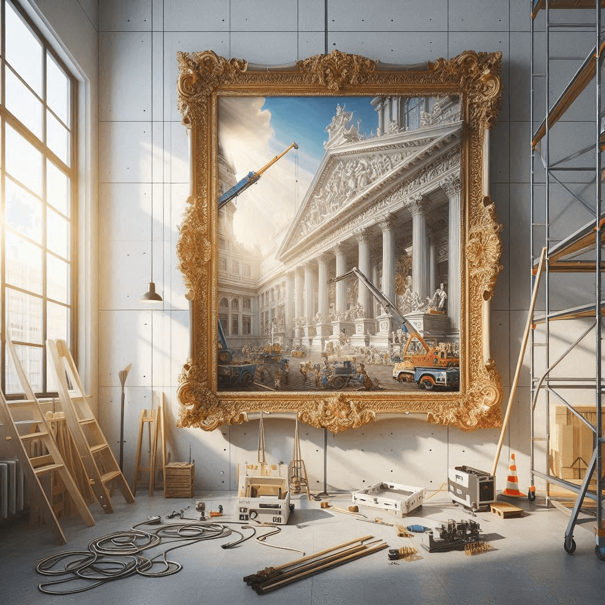

Artworks
Works, gestures, diagrams, prompts, and happenings placed on view as evidence of the concept in motion.
Enter artworksNow on view
Metaconceptual Art studies art as a system: artwork, institution, market, archive, viewer, and meaning folded into one living form.
The artwork is not only the object. It is the condition that permits the object to be seen. It is the institution that frames it, the market that prices it, the archive that remembers it, and the viewer who activates it.

After Sol LeWitt
Linked open data
Most writing about art asks you to take its claims on trust. This site is built to be checked. Every concept and figure in it is pinned to the public records that museums, libraries, and Wikipedia already rely on — Wikidata, and the Getty vocabularies that catalogue the art world. Follow any identifier below and you step out of this page into the shared record of art.
Concept
Person